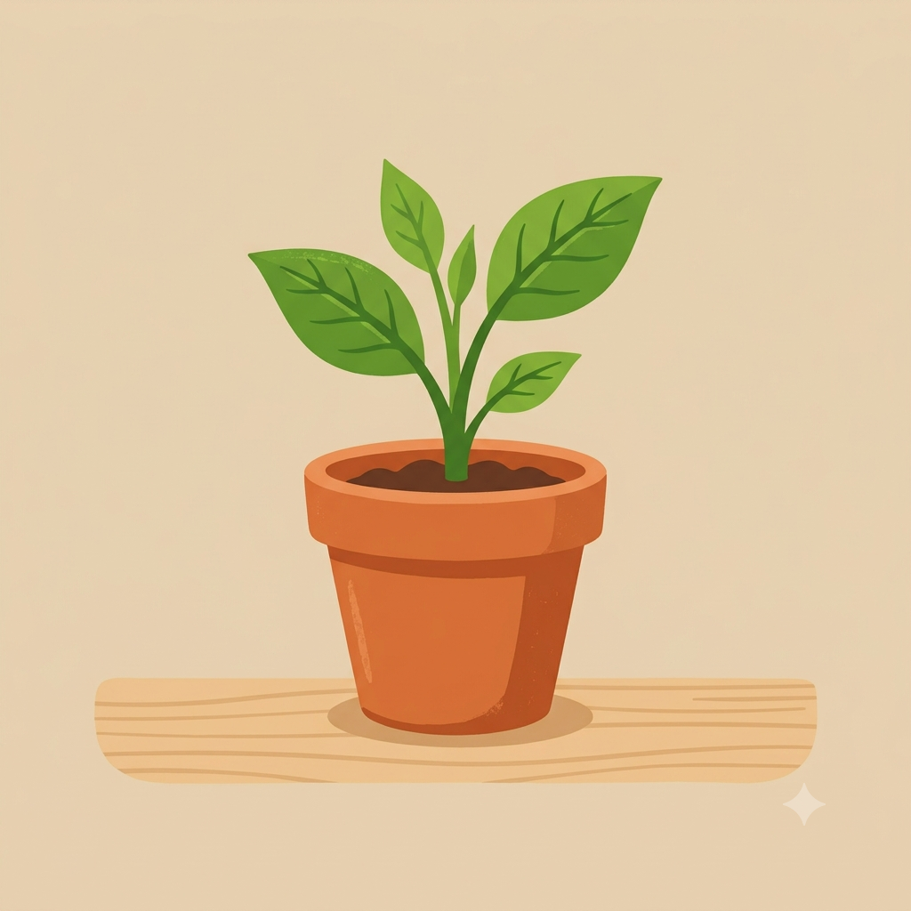

Como Começar uma Horta em Espaços Pequenos
Por: Dilmara Teixeira
Mesmo morando em apartamento, é possível cultivar temperos e hortaliças frescos. Escolha um local com boa iluminação e vasos com drenagem adequada.
Fonte: Cultivo em Casa
Compartilhando dicas, cultivo e amor pela natureza

Por: Dilmara Teixeira
Mesmo morando em apartamento, é possível cultivar temperos e hortaliças frescos. Escolha um local com boa iluminação e vasos com drenagem adequada.
Fonte: Cultivo em Casa

Por: Dilmara Teixeira
Reaproveitar cascas de ovos, borra de café e restos de vegetais ajuda a nutrir a terra de forma natural, sem precisar de defensivos químicos.
Fonte: Guia da Horta

Por: Dilmara Teixeira
Regar no início da manhã ou no final da tarde evita a evaporação rápida da água e protege as raízes do choque térmico nos dias mais quentes.
Fonte: Jardinagem Prática

Por: Dilmara Teixeira
Insetos benéficos como as joaninhas e defensivos caseiros à base de sabão neutro e alho ajudam a manter sua horta protegida sem agredir a natureza.
Fonte: Horticultura Orgânica

Por: Dilmara Teixeira
Manjericão, cebolinha, salsinha, hortelã e alecrim crescem rapidamente e garantem sabor sempre fresco para os seus pratos no dia a dia.
Fonte: Ervas & Sabores

Por: Dilmara Teixeira
Saber a hora certa de colher garante vegetais mais saborosos e estimula a planta a continuar produzindo novas folhas por mais tempo.
Fonte: Segredos da Terra